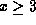

Next: Do loops
Up: JVM instructions for FORTRAN
Previous: JVM instructions for FORTRAN
FORTRAN logical if statements take the
form of a test/statement on one line. If the test is true,
the statement is executed, if false, execution passes to the
statement on the next line. This is implemented in jasmin
by reversing the relational operator (RO) to skip
the conditional execution if true. For example, consider
the following code.
The FORTRAN source requires setting y=1 if
x<3, then returning. In the JVM, if  ,
we jump directly to the return at Label 1,
else executions ``falls through'' the test and
1 is assigned to y before returning.
One unique label is required for each logical if statement.
Keith Seymour
Wed Jun 10 19:38:14 EDT 1998